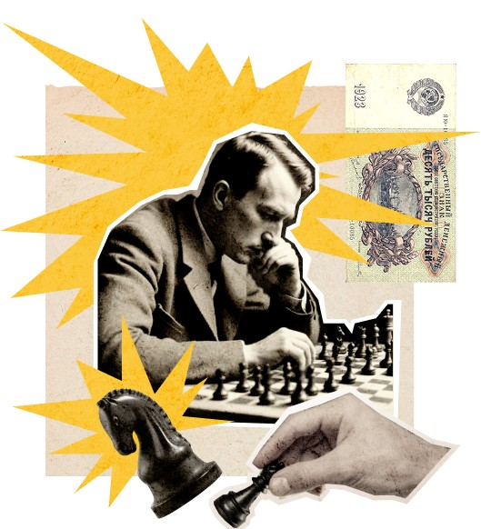

Чтобы поддержать
Международный васюкинский турнир посетите лекцию на тему:
«Плодотворная дебютная идея»
Международный васюкинский турнир посетите лекцию на тему:
«Плодотворная дебютная идея»

Чтобы поддержать Международный васюкинский турнир
посетите лекцию на тему:
«Плодотворная дебютная идея»
«Плодотворная дебютная идея»

и Сеанс одновременной игры
в шахматы на 160 досках
гроссмейстера О. Бендера
в шахматы на 160 досках
гроссмейстера О. Бендера
Место проведения:
Клуб «Картонажник»
Дата и время мероприятия:
Стоимость входных билетов:
20 коп.
Плата за игру:
50 коп.
Взнос на телеграммы:
100 руб.
21 руб. 16 коп
По всем вопросам обращаться в администрацию к К. Михельсону
Этапы преображения
Васюков
Будущие источники
обогащения васюкинцев
обогащения васюкинцев
1
Строительство железнодорожной магистрали Москва-Васюки
2
Открытие фешенебельной гостиницы «Проходная пешка» и других небоскрёбов
3
Поднятие сельского хозяйства в радиусе на тысячу километров: производство овощей, фруктов, икры, шоколадных конфет
4
Строительство дворца для турнира
5
Размещение гаражей для гостевого автотранспорта
6
Постройка сверхмощной радиостанции для передачи всему миру сенсационных результатов
7
Создание аэропорта «Большие Васюки» с регулярным отправлением почтовых самолётов и дирижаблей во все концы света, включая Лос-Анжелос и Мельбурн

Участники турника
Хозе-Рауль Капабланка
Чемпион мира по шахматам